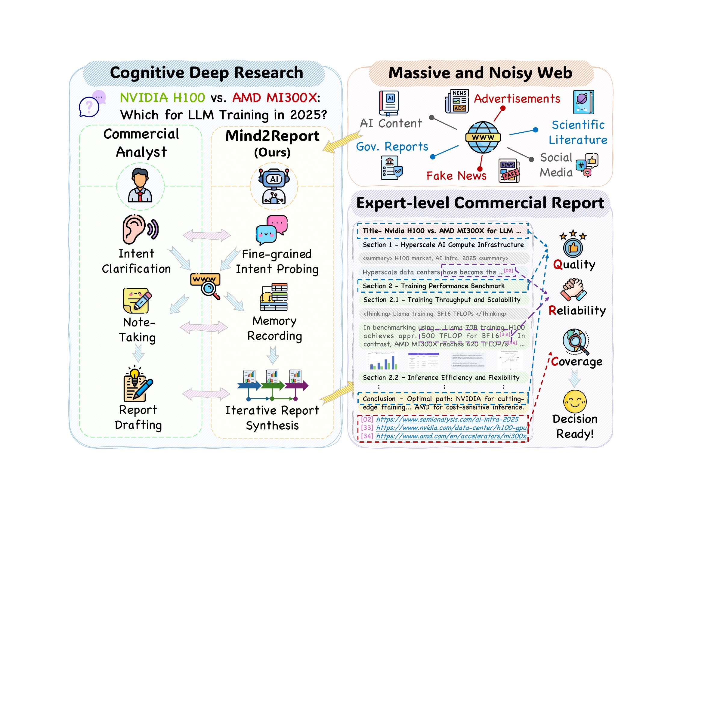
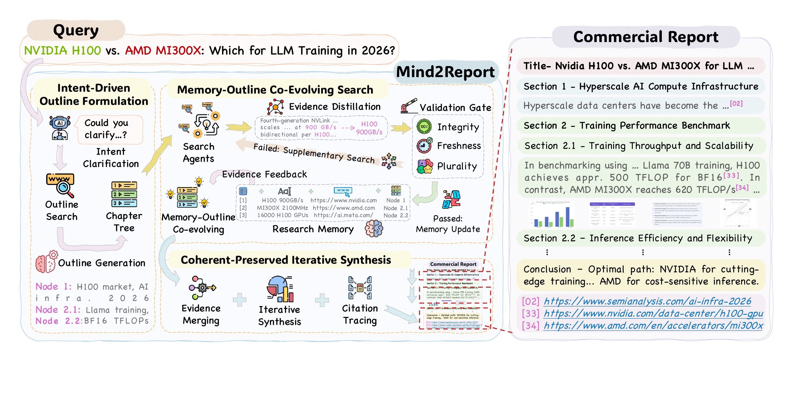
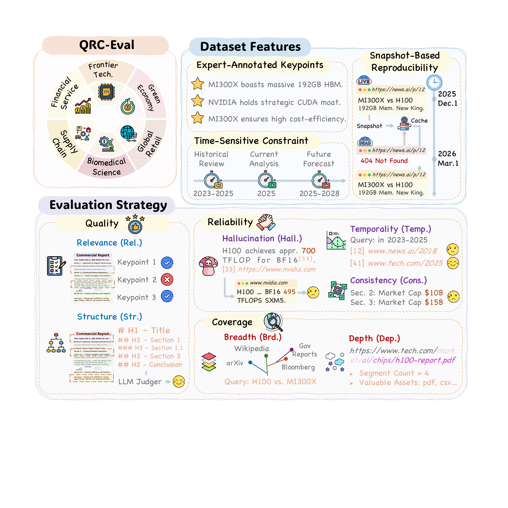
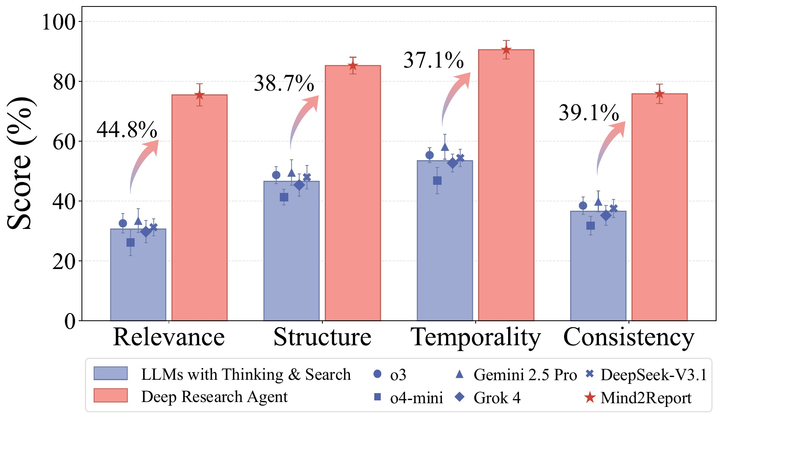
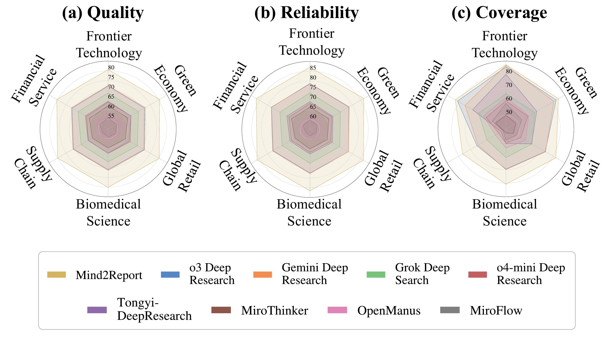
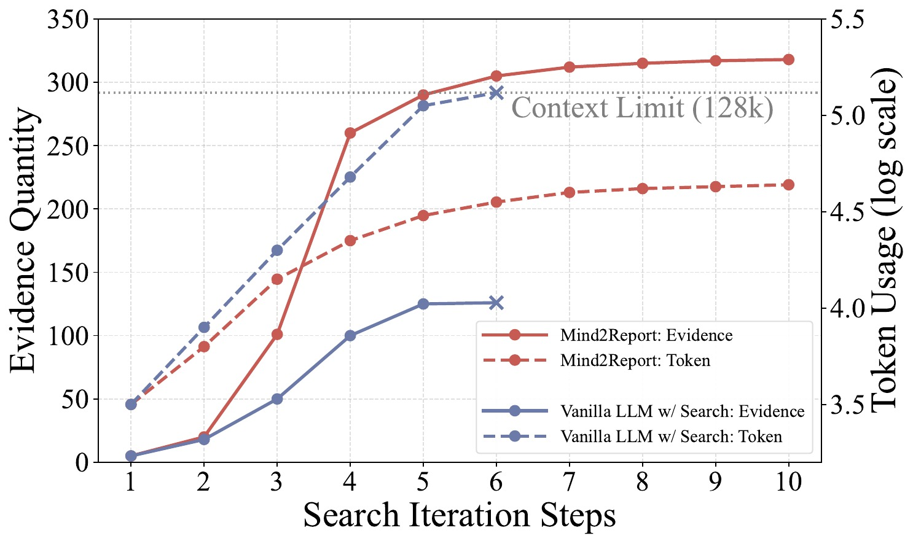
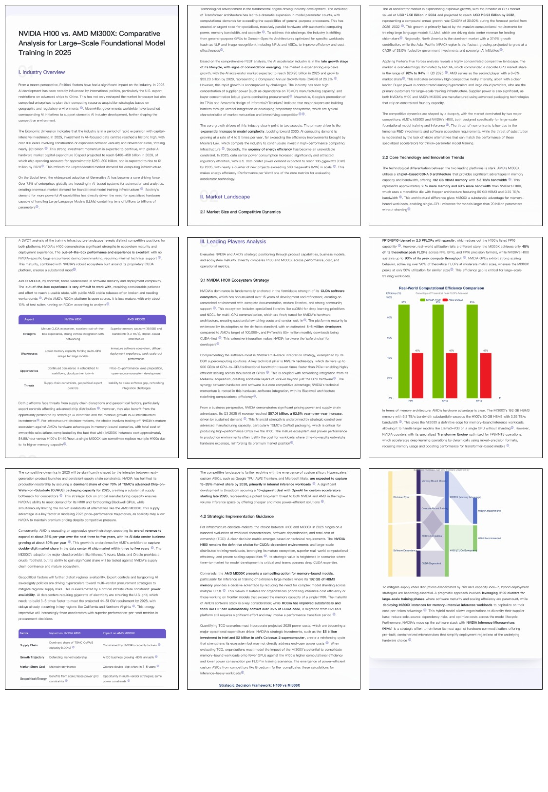

意图驱动的大纲构建
主动追问模糊需求，通过初步检索把高层研究目标拆解为结构化章节树，让后续证据收集有明确方向。
Cognitive Deep Research · Scientific Literature Intelligence
A Cognitive Deep Research Agent for Expert-Level Commercial Report Synthesis
从模糊研究意图出发，在海量、动态且充满噪声的网页与科技文献中持续搜索、筛选和组织证据， 最终生成可靠、全面、可追溯的专业报告。
中国科学技术大学 · 认知智能全国重点实验室
科大讯飞 · 人工智能工程院

AI for Science Perspective
AI for Science 不只需要模型“读过”论文，更需要它围绕真实研究问题组织证据：理解用户究竟要解决什么， 从论文、政府报告、网页与结构化资料中辨别可信信息，并把跨来源知识综合成逻辑连贯、可核验的长篇结论。
Mind2Report 以商业报告合成为核心场景，但它所处理的意图对齐、文献检索、证据记忆、跨来源综合与引用追踪， 同样构成科技文献认知和研究智能体的重要基础能力。
Cognitive Workflow
三个模块围绕同一份研究大纲与动态记忆协同演化，让检索、验证和写作始终服务于最终报告。

主动追问模糊需求，通过初步检索把高层研究目标拆解为结构化章节树，让后续证据收集有明确方向。
递归检索并蒸馏证据，以完整性、时效性和多样性作为验证门；不足的信息触发补充搜索，合格证据写入研究记忆。
合并离散证据，沿章节树逐段生成长篇报告，并将关键陈述重新连接到原始来源，兼顾叙事连贯与证据可追溯。
QRC-Eval
QRC-Eval 面向时效性商业研究，结合专家标注要点与网页快照，从质量、可靠性和覆盖度三个层面检查报告及其引用来源。

检查报告与专家关键点的相关性，以及章节结构是否完整、清晰。
检查事实幻觉、引用的时间约束，以及报告内部陈述的一致性。
衡量信息来源是否足够广泛，以及证据资产和论证细节是否足够深入。
Experimental Results
实验覆盖闭源与开源深度研究系统。Mind2Report 在综合排名上取得最优表现，并在不同领域保持稳定的质量、可靠性与覆盖度。


Dynamic Research Memory
动态研究记忆把网页内容蒸馏为与大纲节点绑定的可追踪证据，使系统能够继续扩展搜索， 同时避免把全部原始材料直接塞入有限上下文。


Decision-Ready Output
最终输出包含层级清晰的章节、数据表格、可视化和逐条引用。报告不是搜索结果的堆叠， 而是围绕研究意图组织的完整分析过程与结论。
查看代码与数据 →Citation
@misc{cheng2026mind2report,
title={Mind2Report: A Cognitive Deep Research Agent for Expert-Level Commercial Report Synthesis},
author={Mingyue Cheng and Daoyu Wang and Qi Liu and Shuo Yu and Xiaoyu Tao and Yuqian Wang and Chengzhong Chu and Yu Duan and Mingkang Long and Enhong Chen},
year={2026},
eprint={2601.04879},
archivePrefix={arXiv},
primaryClass={cs.CL},
url={https://arxiv.org/abs/2601.04879}
}